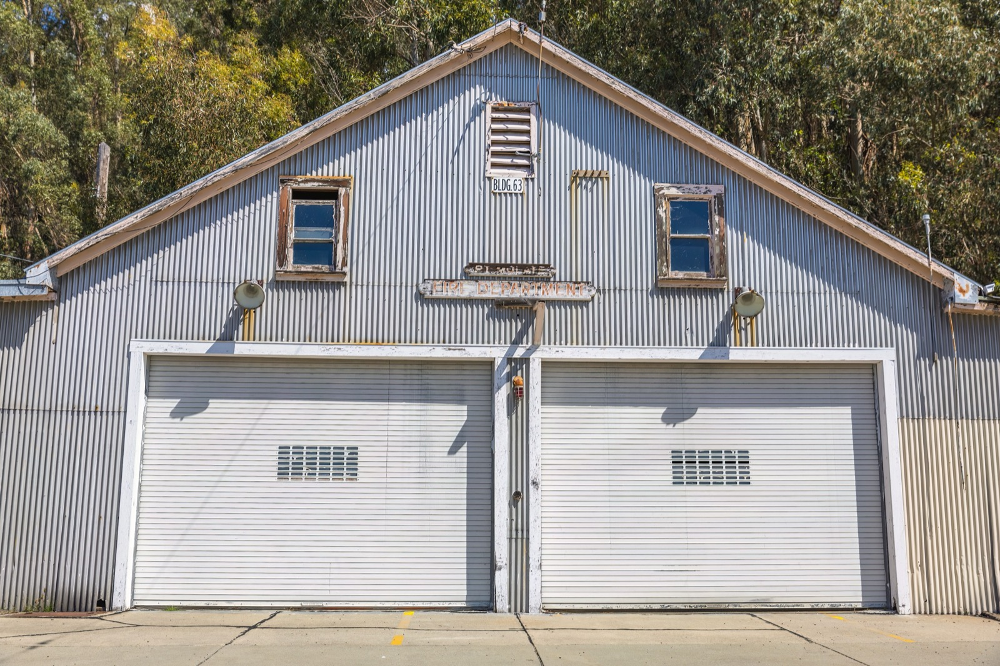

Barndominiums
A steel post-frame shell wrapped around wide-open living space, and the fastest-growing home style in rural America. Cheap, huge, and quick to build. The tropical catch is heat and the metal skin.

A barndominium, or "barndo," is a home built inside a steel or wood post-frame shell, the same efficient structure as a modern barn or workshop, finished out as living space. Wide clear spans, no interior load-bearing walls, a metal skin and roof, and a build that goes up fast and cheap. It's the fastest-growing rural home style in America, and the appeal is obvious: a lot of house per dollar.
How a barndo goes up
Instead of a stud-by-stud frame, a barndominium uses post-frame construction: large posts set on piers or a slab carry engineered trusses that clear-span the whole width, so there are no interior structural walls. The shell is wrapped in metal panels (roof and often walls), then insulated and finished inside like any home. Because the structure is simple and repetitive, it's fast to erect and forgiving of an owner-builder's involvement.
What does it cost?
Barndos are a value play: roughly $$, often $60–160/m² ($60–150/sq ft) finished depending on how much of the interior you complete — the bare shell is remarkably cheap, and you pay for the finish. The open span also means fewer materials and less labor than a conventional frame of the same size. (Approximate; shell vs. finish level drives it enormously.)
The trade-offs at a glance
| Factor | Rating | Notes |
|---|---|---|
| Cost | 🟢 | A lot of house per dollar; cheap shell |
| Build speed | 🟢 | Post-frame goes up fast |
| Open space | 🟢 | Clear spans, no interior load walls |
| DIY-friendly | 🟢 | Owner-builders finish interiors often |
| Heat/climate fit | 🔴 | Metal shell bakes without serious insulation |
| Moisture/termite | 🟡 | Steel resists termites; detail the base against damp |
| Seismic/wind | 🟢 | Engineered post-frame handles wind well |
| Permitting/finance | 🟡 | Understood in the US; less familiar in Latin America |
How hard is one to build?
Post-frame is one of the simpler, faster shells to put up, which is the whole appeal. But the barndominium is very much a North American phenomenon, and that matters for buildability in the tropics. Local crews in Panama or Costa Rica build in concrete, not steel post-frame, so you'd be importing an unfamiliar system, and the metal skin is a heat problem here unless you invest in real insulation and ventilation, the same issue as a bare tin roof or container home. Financing and permitting are also less established regionally. The barndo's cost-and-space math is genuinely attractive, but in the tropics it needs a serious insulation strategy and a builder willing to work outside the concrete default.
Thinking about building in Panama or Costa Rica?
SORA is a fixed-price design-build platform for foreign buyers. We build in reinforced concrete by default — and we can talk you through when an alternative method actually makes sense for the tropics. Play with cost live in the 3D configurator.
See real 2026 build costs →Frequently asked questions
Are barndominiums cheaper than a regular house?
Often yes — the post-frame shell is cheap and fast, and the clear-span design uses less material and labor than a conventional frame of the same size. The final cost depends heavily on how nicely you finish the interior, which is where a barndo's price can climb to match a normal home.
Do barndominiums work in hot climates?
Only with serious insulation. The metal shell and roof absorb and radiate heat, so without substantial insulation and ventilation a barndominium is uncomfortably hot in the tropics — the same challenge as any metal-clad building near the equator.
Can you build a barndominium in Panama or Costa Rica?
It's possible but uncommon — local builders work in concrete, not steel post-frame, so you'd be introducing an unfamiliar system and importing know-how. It can be done, but expect less local expertise, tougher financing, and a real need to solve the metal-shell heat problem.
Sources & verification
Figures in this guide were checked against primary and authoritative sources on 27 July 2026. Immigration, tax, and cost figures change — always confirm the current rules with the official body or a licensed professional before acting.
- Bob Vila — barndominium cost & construction
- MN Property Group — post-frame & construction trends